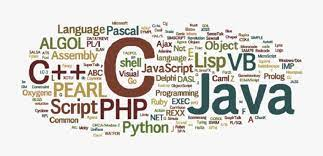

I gathered, accessed and cleaned data from a Twitter account @WeRateDogs. Python's libraries such as Pandas,
NumPy, Matplotlib & Seaborn were used to gather data manually and programatically, access three datasets for quality
and tidiness issues, fix the issues identified (data cleaning), then derive insights from the clean data.

Using mostly visualizations with Python, I explored a dataset from Prosper - a loan company. I used Matplotlib & Seaborn to create univariate, bivariate and multivariate plots to find out what factors influences the Annual Percentage Rate (APR) of a loan.

I carried out multiple realistic end to end case studies with different datasets that covers a range of SQL topics.

Analysis of data gotten from a survey of developers conducted by Stackoverflow in 2019 to find out what technologies developers have used in the past and which they are likely to use in future.

Performed data mining on the mammoth DBLP dataset to find out which authors collaborate with each other the most.